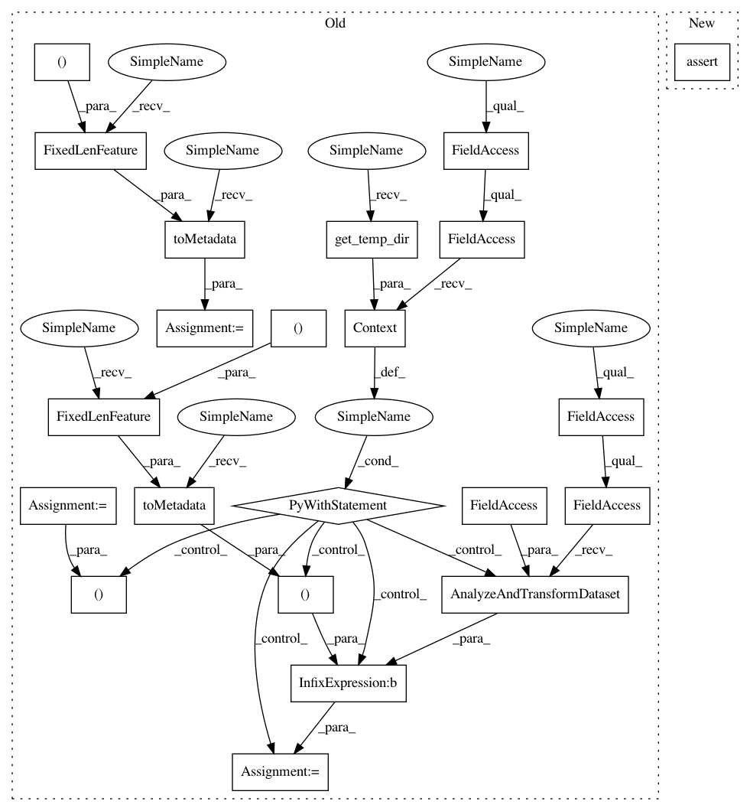

14ee57f33aa9a07fa6440c049fefd47099dbc5ae,tensorflow_transform/beam/impl_test.py,BeamImplTest,testNumericAnalyzersWithScalarInputs,#BeamImplTest#,410
Before Change
}
input_data = [{"a": 4}, {"a": 1}]
input_metadata = self.toMetadata(
{"a": tf.FixedLenFeature((), tf.int64, 0)})
with beam_impl.Context(temp_dir=self.get_temp_dir()):
transformed_dataset, _ = (
(input_data, input_metadata) |
beam_impl.AnalyzeAndTransformDataset(preprocessing_fn))
expected_transformed_data = [
{"min": 1, "max": 4, "sum": 5, "size": 2, "mean": 2.5},
{"min": 1, "max": 4, "sum": 5, "size": 2, "mean": 2.5}]
expected_transformed_metadata = self.toMetadata({
"min": tf.FixedLenFeature((), tf.int64, None),
"max": tf.FixedLenFeature((), tf.int64, None),
"sum": tf.FixedLenFeature((), tf.int64, None),
"size": tf.FixedLenFeature((), tf.int64, None),
"mean": tf.FixedLenFeature((), tf.float64, None)
})
self.assertDatasetsEqual(
transformed_dataset,
(expected_transformed_data, expected_transformed_metadata))
After Change
"mean": sch.ColumnSchema(tf.float64, [],
sch.FixedColumnRepresentation())
})
self.assertAnalyzeAndTransformResults(
input_data, input_metadata, preprocessing_fn, expected_data,
expected_metadata)
def testNumericAnalyzersWithInputsAndAxis(self):
def preprocessing_fn(inputs):
def repeat(in_tensor, value):
In pattern: SUPERPATTERN
Frequency: 4
Non-data size: 22
Instances
Project Name: tensorflow/transform
Commit Name: 14ee57f33aa9a07fa6440c049fefd47099dbc5ae
Time: 2017-04-26
Author: no-reply@google.com
File Name: tensorflow_transform/beam/impl_test.py
Class Name: BeamImplTest
Method Name: testNumericAnalyzersWithScalarInputs
Project Name: tensorflow/transform
Commit Name: 14ee57f33aa9a07fa6440c049fefd47099dbc5ae
Time: 2017-04-26
Author: no-reply@google.com
File Name: tensorflow_transform/beam/impl_test.py
Class Name: BeamImplTest
Method Name: testNumericAnalyzersWithNDInputs
Project Name: tensorflow/transform
Commit Name: 14ee57f33aa9a07fa6440c049fefd47099dbc5ae
Time: 2017-04-26
Author: no-reply@google.com
File Name: tensorflow_transform/beam/impl_test.py
Class Name: BeamImplTest
Method Name: testNumericAnalyzersWithScalarInputs
Project Name: tensorflow/transform
Commit Name: 14ee57f33aa9a07fa6440c049fefd47099dbc5ae
Time: 2017-04-26
Author: no-reply@google.com
File Name: tensorflow_transform/beam/impl_test.py
Class Name: BeamImplTest
Method Name: testUniquesAnalyzerWithNDInputs
Project Name: tensorflow/transform
Commit Name: 14ee57f33aa9a07fa6440c049fefd47099dbc5ae
Time: 2017-04-26
Author: no-reply@google.com
File Name: tensorflow_transform/beam/impl_test.py
Class Name: BeamImplTest
Method Name: testUniquesAnalyzer